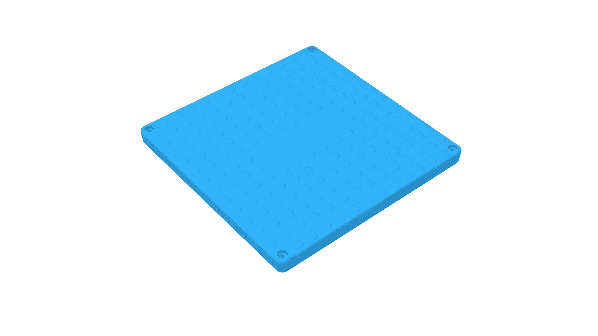

Access Covers
Poly
Specifications Coming as standard with most common pump stations and grease arrestors, a Polyethylene (Poly) lid is the most affordable access cover option but offers the lowest load rating. It is suitable for non-trafficable or above ground use only. Supplied fixed to the tank…
- N/A / N/AClass
- 600x600mm / 600x900mmSize
- 50mm / 50mmHeight
Product details
Specifications
| Model | Poly |
|---|---|
| Range | Access Covers |
| Class | N/A / N/A |
| Size | 600x600mm / 600x900mm |
| Height | 50mm / 50mm |
| Width | 690mm / 770mm |
| Length | 690mm / 1070mm |
| Approx. Weight | 5kg / 10kg |
| Poly Tanks | 250, 900, 1200L / 2000, 3000, 5000L |
| Grease Arrestors | 1000, 1500L / N/A |
What is supplied
Construction
Coming as standard with most common pump stations and grease arrestors, a Polyethylene (Poly) lid is the most affordable access cover option but offers the lowest load rating.
- It is suitable for non-trafficable or above ground use only.
- Supplied fixed to the tank station or grease arrestor with necessary galvanised hardware and gas-tight seal.
- (also available separately)
Range applications
Applications
- Stormwater Collection
- Sewer Systems
- Electrical & Communication Systems
- Data Cabling
- Roadworks and Maintenance
- Construction Projects
These are common applications for the Access Covers range. Confirm product suitability with Aline Pumps for your project.
Technical information
Downloads
Technical documents
Ask Aline Pumps for the current brochure and product drawings.
Talk to our team
Need help specifying Poly?
Send your application requirements to Aline Pumps or call 1800 018 999.